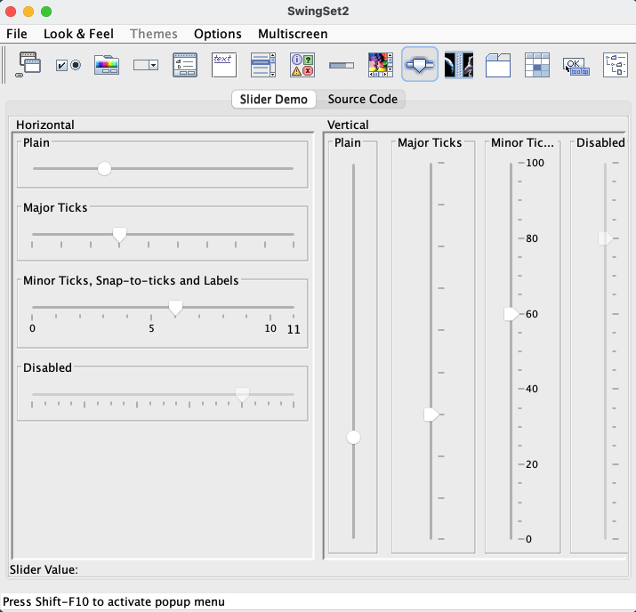

| 1 |
Test Slider Demo (test different Sliders and its values should changing when
different keys are pressed and mouse drag and click action are performed). |
- Tab or use array keys until the Slider icon
 has focus on it. has focus on it.
- Press 'space' to choose Slider Demo. Press tab key to move the focus on the slider.
- Pressing Left / Down arrow keys will decrease the Slider value.
- Pressing Right / Up arrow keys will increase the Slider value.
- Pressing Home key Slider value is set to initial value
- Pressing End key Slider value is set to final or maximum value
- Pressing PageUp / PageDown key Slider value is jump to the value range
value set.
- Use mouse to drag the slider head or thumb to increase or decrease the slider value.
- Disabled Slider value will not change.

|